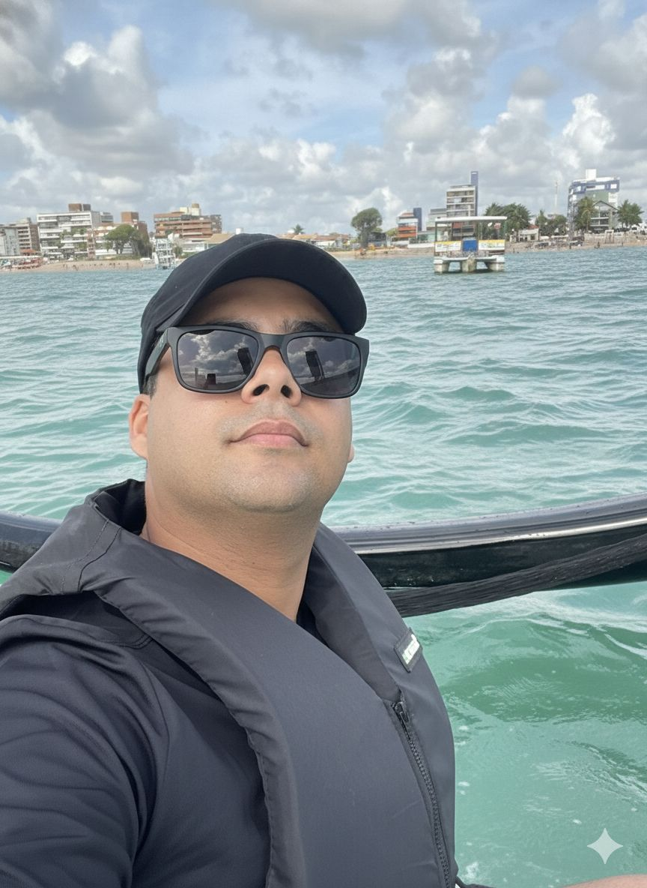

Cores preferidas: Preto, Azul escuro, Verde escuro, Vermelho
Tamanho do calçado: 41
Tamanho blusa/camisa: G
Tamanho short/calça: 46
Acessórios: Óculos Sport Praia
Prefere doce ou salgado? Os dois
Doces preferidos: Pastel de carne com açúcar, Romeu e Julieta
Sugestões de preferência: Óculos, camisa manga dry fit, bermuda esportiva, mochila impermeável, relógio casual
Alergias: Não